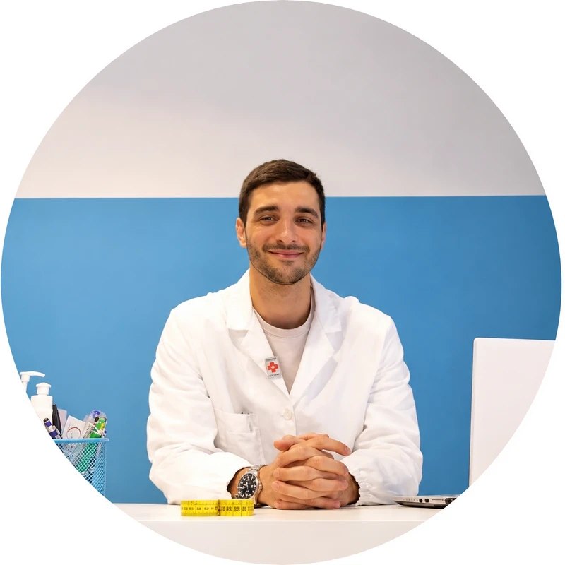

Benessere e gestione del peso
Per chi desidera migliorare le proprie abitudini alimentari, affrontare un percorso di gestione del peso e sviluppare un rapporto più equilibrato con l'alimentazione.
Biologo Nutrizionista Nutrizione clinica e sportiva
Un percorso nutrizionale personalizzato per prenderti cura della tua salute, migliorare le tue abitudini alimentari e trovare un equilibrio sostenibile nel tempo.
Quarrata Pistoia Prato Online

Chi sono
Sono il Dr. Pietro Piombetti, Biologo Nutrizionista, e mi occupo di nutrizione clinica e sportiva.
Credo che un'alimentazione equilibrata non debba essere vissuta come un insieme di rinunce, ma come uno strumento concreto per prendersi cura di sé e migliorare la qualità della propria vita.
Nel mio lavoro parto dall'ascolto della persona, delle sue esigenze, delle sue abitudini e dei suoi obiettivi, per costruire percorsi nutrizionali personalizzati, realistici e sostenibili.
Mi sono formato presso l'Università degli Studi di Firenze, conseguendo la laurea in Scienze Biologiche e successivamente la laurea magistrale in Scienze dell'Alimentazione. Ho approfondito la nutrizione applicata all'attività fisica attraverso un Master in Nutrizione e Dietetica Applicata allo Sport presso l'Università Politecnica delle Marche.
La mia attenzione è rivolta non soltanto al piano alimentare, ma anche alla costruzione di abitudini che possano accompagnare la persona nel tempo.
Il mio obiettivo è aiutarti a trovare un equilibrio alimentare compatibile con la tua vita.
A chi mi rivolgo
Non esiste un percorso alimentare uguale per tutti. Le indicazioni nutrizionali devono tenere conto della persona, delle sue necessità e del suo stile di vita.
Per chi desidera migliorare le proprie abitudini alimentari, affrontare un percorso di gestione del peso e sviluppare un rapporto più equilibrato con l'alimentazione.
Per chi necessita di un supporto nutrizionale personalizzato in presenza di condizioni cliniche diagnosticate o esigenze specifiche legate alla salute.
Per chi pratica attività fisica e desidera organizzare l'alimentazione in relazione agli allenamenti, al recupero e agli obiettivi individuali.
Approccio
Credo in un approccio nutrizionale che parta dalla conoscenza della persona e che valorizzi il cambiamento graduale.
Ogni percorso parte dalla comprensione delle tue abitudini, delle necessità individuali e degli obiettivi.
Indicazioni definite sulla tua situazione personale, sullo stile di vita e sulle eventuali esigenze cliniche.
Un'alimentazione varia e consapevole, senza restrizioni drastiche o soluzioni estreme.
Il cambiamento si costruisce con passi concreti e sostenibili, monitorati nel tempo.
Servizi
Percorsi nutrizionali pensati per accompagnarti nelle diverse esigenze di salute, alimentazione e attività fisica.

Valuto le abitudini alimentari e i parametri antropometrici. La composizione corporea viene analizzata con la bioimpedenziometria: un esame molto semplice e non invasivo, effettuato con una bilancia bioimpedenziometrica, per l'analisi qualitativa e quantitativa della composizione corporea. Dopo la prima visita, i controlli permettono di monitorare l'andamento del percorso.

Un supporto nutrizionale personalizzato per esigenze legate a condizioni cliniche diagnosticate, come alterazioni metaboliche, problematiche gastrointestinali e altre necessità alimentari specifiche. Le indicazioni vengono costruite tenendo conto della condizione di salute, dello stile di vita e delle preferenze alimentari, per un percorso sostenibile nel tempo.

Percorsi alimentari adattati alla disciplina praticata, alla frequenza degli allenamenti e agli obiettivi individuali. L'alimentazione viene organizzata con attenzione all'energia, alla prestazione e al recupero, sia per chi pratica sport a livello agonistico sia per chi si allena per il proprio benessere.

Percorsi dedicati alla perdita di peso e al mantenimento nel tempo, senza diete drastiche. Lavoriamo insieme sulle abitudini quotidiane, per comprendere le tue esigenze e sviluppare scelte alimentari più consapevoli, con un rapporto equilibrato e sereno con il cibo.
Come funziona
Un momento dedicato a conoscere la tua situazione, le abitudini alimentari, lo stile di vita e gli obiettivi.
Valutazione dei parametri antropometrici e analisi con la bioimpedenziometria, semplice e non invasiva.
Sulla base delle informazioni raccolte elaboro un percorso nutrizionale adattato alle tue esigenze.
Gli incontri successivi permettono di valutare l'andamento e apportare gli adattamenti necessari.
Dove ricevo
Ricevo su appuntamento in diverse sedi tra le province di Pistoia e Prato. È inoltre possibile richiedere informazioni sulle consulenze nutrizionali online.
GEMINI Studi Medici
Piazza Risorgimento 35/A
Quarrata (PT)
Studio
Via Gianni Metello 37
Pistoia (PT)
CosmoCare
Via Emilio Giubilei 7
Prato (PO)
Consulenze a distanza
Ovunque tu sia
FAQ
Durante la prima consulenza raccolgo le informazioni sulla tua situazione personale, sulle abitudini alimentari, sullo stile di vita e sui tuoi obiettivi. Questi elementi mi permettono di impostare insieme a te un percorso personalizzato.
Sì. Elaboro le indicazioni nutrizionali considerando le tue esigenze individuali, le abitudini quotidiane e gli obiettivi che abbiamo concordato.
Certo. La nutrizione sportiva è uno degli ambiti di cui mi occupo: adatto il percorso al tipo di attività che pratichi e alle tue esigenze.
Sì, ricevo anche online. Contattami per conoscere modalità e disponibilità delle consulenze a distanza.
Sì. Con i controlli monitoro l'andamento del percorso e valuto insieme a te eventuali modifiche alle indicazioni nutrizionali.
Contatti